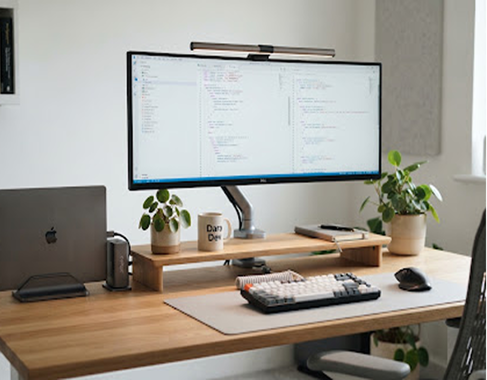
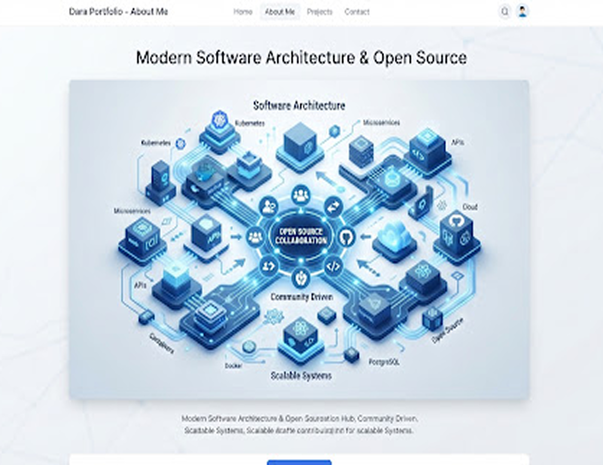

Phnom Penh,Cambodia•
Khmer • English (Professional)
Education
B.S. in Computer Science
Royal University of Phnom Penh (RUPP)
2022 — 2026 (Expected Senior)KEY COURSEWORK
Designing Interfaces, Writing Clean Code.
Senior Computer Science student exploring the sweet spot between mathematical logic and human-centered design. I architect modular frontends and craft cohesive design systems that feel delightful, accessible, and fast.
99
Engineering & Design Philosophy
“Code without empathetic design becomes sterile. Design without technical feasibility remains fragile. My goal is to eliminate that friction by understanding token architecture, runtime performance, and visual balance concurrently.”
Systemic Design
Obsessed with typography scales, auto-layout tokens, and atomic design libraries bridging Figma into zero-drift code.
Runtime Precision
Prioritizing 60fps animations, lightweight bundles, semantic accessibility, and deterministic state management.
14+
Shipped Projects
2.5k+
Git Commits
100%
A11y & Web Standards
COMPETENCY OVERVIEW
Full Technical & Design Matrix
Design & Prototyping
Transforming complex user journeys into intuitive, accessible interfaces through continuous iteration and validation.
Figma
Wireframing
FigJam
Usability Testing
User Personas
Design Tokens
Micro-interactions
Information Architecture
User platform
Figma & Token Architecture
Advanced
Frontend Engineering
Writing strongly-typed, component-driven client applications with exceptional performance and clean abstractions.
TypeScript
Next.js 14
Tailwind CSS
JavaScript (ES6+)
HTML5 & Semantic Web
Canvas API
React & Modern TypeScript
Proficient
Backend & Tooling
Building secure data pipelines, microservices, and continuous delivery flows to power modern web products.
Python
FastAPI
Node.js
PostgreSQL basics
RESTful APIs
Docker containers
Vercel & Cloud
Python & RESTful
Intermediate
HOW I WORK
Core Principles & Soft Skills
Software is built by people, for people. Here are the professional habits and mindsets I cultivate in cross-functional team settings.
CollaborativeMindset
Active listener whohrives in open critique,pair programming, andtransparent asynchronousdocumentation.
Fast Learner &Adapter
Unpacking newframeworks, APIs, andmental models swiftly todeliver practical,unblocked value.
Empathy-DrivenDesign
Breaking ambiguousarchitectural bottlenecksdown into testable,discrete computationalmodules.
Detail-Oriented &Rigorous
Pixel-perfect spacing,strict type safety, edge-case coverage, and zerolinting shortcuts.
INTERESTS & INSPIRATION
Beyond the Terminal
Coffee Brewing (V60)
Fascinated by extractionvariables: grind micron sizes,water temperature curves, andsingle-origin profiles.
Desk Setups & Tech
Curating clutter-free workth mechanical keyboards,lighting, and minimal distractionzones.

Street Photography
Framing candid city moments,arhitetural geometry, andgolden hour street life acrossSoutheast Asia.

Open Source Contributing
Submitting documentationenhnceents, accessibilitypatches, and small UI bug fixecommunity repos.
Detail-Oriented
Championing users withrse cognitive orphysical constraints tobuild truly inclusive.
Looking for 2025/2026 Engineering & Design Internships
Let's build something exceptionaltogether.
Have a product role, an open-source collaboration, or just want to chatabout type scales and React architecture? My inbox is always open.
SayHello
View FeaturedProjects